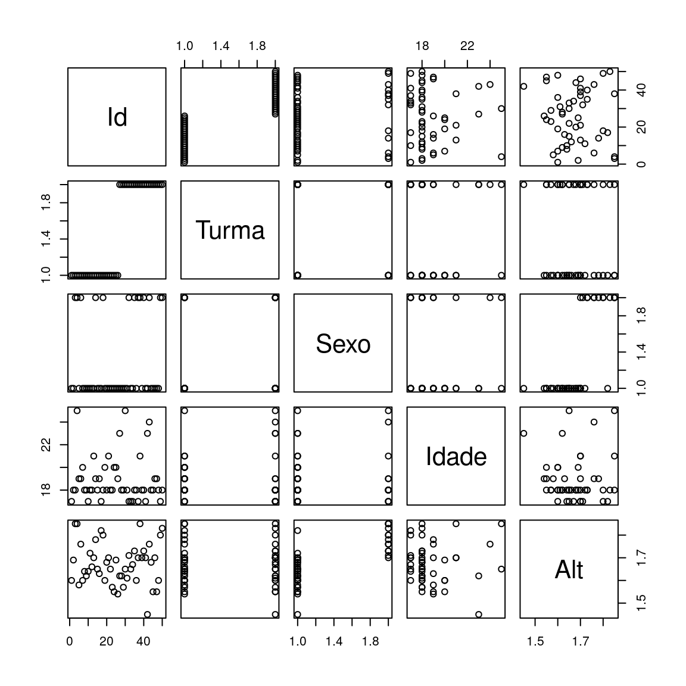
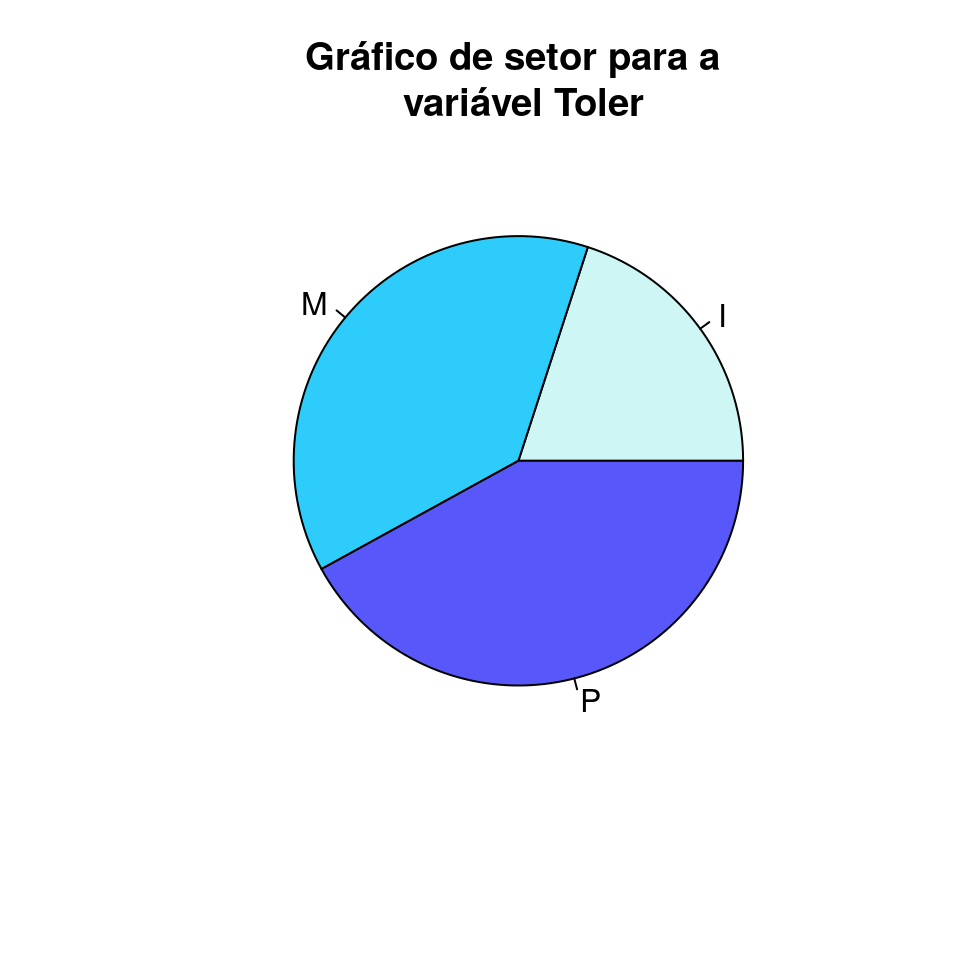
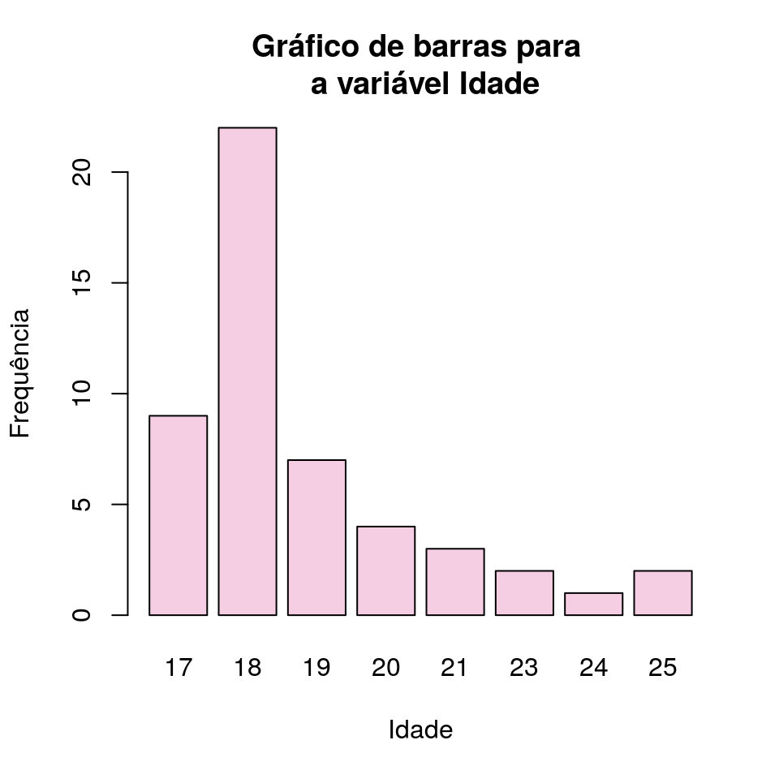
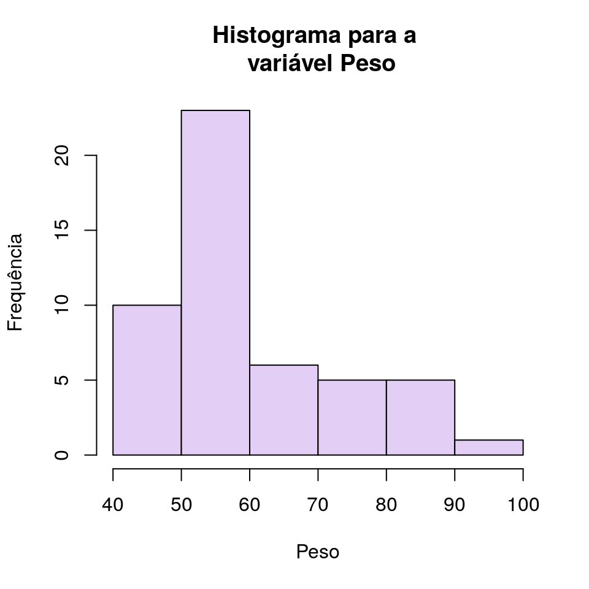
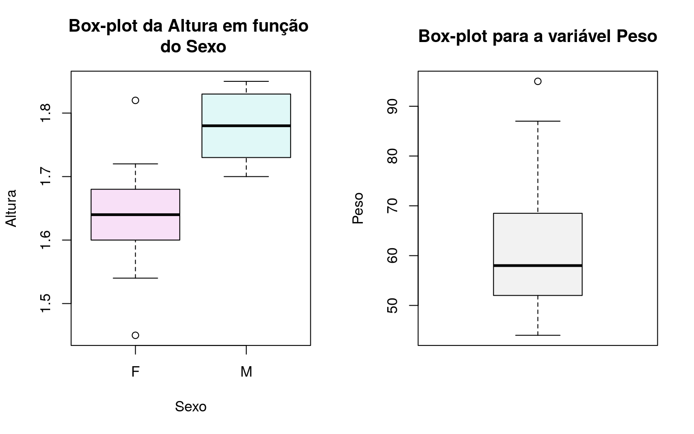
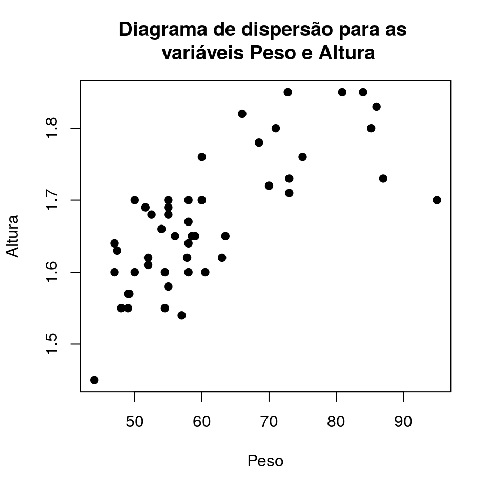
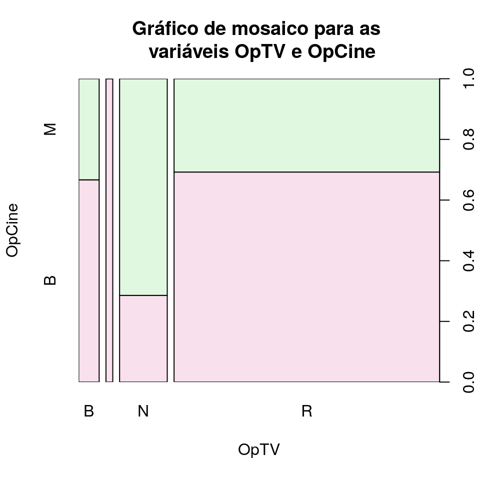

|
Primeiros Passos com o R
|
Parte 4 - Análise Exploratória
1 Análise exploratória
Esta parte do material terá enfoque mais prático. Consideraremos um conjunto de dados genérico que contém diversos tipos de variável e vamos conduzir uma análise exploratória dos dados de forma a varrer o máximo de ferramentas para análise descritiva e como proceder para utilizá-las no R.
Como exemplo de conjunto de dados brutos considere aquele descrito no livro Noções de Probabilidade e Estatística em que um questionário (disponível aqui) foi aplicado aos alunos do primeiro ano de uma escola e possui as seguintes informações:
- Id: identificação do aluno.
- Turma: turma a que o aluno foi alocado (A ou B).
- Sexo: F se feminino, M se masculino.
- Idade: idade em anos.
- Alt: altura em metros.
- Peso: peso em quilogramas.
- Filhos: número de filhos na família.
- Fuma: hábito de fumar, sim ou não.
- Toler: tolerância ao cigarro: (I) indiferente; (P) incomoda pouco; (M) incomoda muito.
- Exerc: horas de atividade física, por semana.
- Cine: número de vezes que vai ao cinema por semana.
- OpCine: opinião a respeito das salas de cinema na cidade: (B) regular a boa; (M) muito boa.
- TV: horas gastas assistindo TV, por semana.
- OpTV: opinião a respeito da qualidade da programação na TV: (R) ruim; (M) média; (B) boa; (N) não sabe.
Parte dos dados brutos, representados em forma de tabela têm a seguinte forma:
Informações de questionário estudantil - dados brutos.
Existem dois tipos de variáveis: as numéricas (quantitativas) e as não numéricas (qualitativas), cada uma das classes tem suas ramificações:
Variáveis Quantitativas: assumem valores numéricos.
Podem ser:
Discretas: características mensuráveis que podem assumir apenas um número finito ou infinito contável de valores e, assim, somente fazem sentido valores inteiros.
Contínuas: características mensuráveis que assumem valores em uma escala contínua, isto é, na reta real.
Variáveis Qualitativas: são as características definidas por categorias, ou seja, representam uma classificação dos indivíduos e não uma característica numérica.
Podem ser:
Nominais: não existe ordenação nem peso entre as categorias.
Ordinais: existe uma ordenação entre as categorias.
Classificando as variáveis do conjunto de dados do exemplo:
- Id: variável qualitativa nominal.
- Turma: variável qualitativa nominal.
- Sexo: variável qualitativa nominal.
- Alt: variável quantitativa contínua.
- Peso: variável quantitativa contínua.
- Filhos: variável quantitativa discreta.
- Fuma: variável qualitativa nominal.
- Toler: variável qualitativa ordinal.
- Cine: variável quantitativa discreta.
- OpCine: variável qualitativa ordinal.
- OpTV: variável qualitativa ordinal.
As variáveis Idade, Exerc e TV em essência são variáveis quantitativas contínuas, contudo note como nos dados elas foram tratadas como discretas, tendo em vista que há apenas valores inteiros.
Didaticamente falando é um conjunto de dados bastante rico pois possui número razoável de observações e variáveis de todos os tipos. Desta forma podemos passar por tópicos que vão desde a leitura dos dados, passando por validações na base e uso de medidas descritivas até chegar nas análises gráficas.
2 Leitura e validação
Como se trata de um conjunto de dados do tipo texto, isto é, com extensão txt, podemos importar os dados para o R através da função read.table() e armazená-los em um objeto:
Com o conjunto de dados importado devemos tomar algumas medidas de precaução, ou seja, verificar se a base foi importada corretamente. Isso implica em verificar número de linhas, colunas, estrutura, se os formatos foram devidamente interpretados na leitura, se os decimais foram corretamente lidos, etc. Tudo isso com o objetivo de evitar problemas posteriores. Devemos nos certificar que os dados estão corretos antes de manipular a base a fim de obter medidas e análises gráficas.
A função read.table() gera um data frame. Podemos verificar através das funções class() e is.data.frame():
## [1] "data.frame"## [1] TRUEUm hábito que todo usuário deve adquirir é utilizar a função str() que, no caso de um data frame, retorna sua dimensão (número de observações e variáveis), além dos nomes das variáveis e seu tipo. Veja:
## 'data.frame': 50 obs. of 14 variables:
## $ Id : int 1 2 3 4 5 6 7 8 9 10 ...
## $ Turma : Factor w/ 2 levels "A","B": 1 1 1 1 1 1 1 1 1 1 ...
## $ Sexo : Factor w/ 2 levels "F","M": 1 1 2 2 1 2 1 1 1 1 ...
## $ Idade : int 17 18 18 25 19 19 20 18 18 17 ...
## $ Alt : num 1.6 1.69 1.85 1.85 1.58 1.76 1.6 1.64 1.62 1.64 ...
## $ Peso : num 60.5 55 72.8 80.9 55 60 58 47 57.8 58 ...
## $ Filhos: int 2 1 2 2 1 3 1 1 3 2 ...
## $ Fuma : Factor w/ 2 levels "NAO","SIM": 1 1 1 1 1 1 1 2 1 1 ...
## $ Toler : Factor w/ 3 levels "I","M","P": 3 2 3 3 2 2 3 1 2 2 ...
## $ Exerc : int 0 0 5 5 2 2 3 2 3 2 ...
## $ Cine : int 1 1 2 2 2 1 1 2 3 2 ...
## $ OpCine: Factor w/ 2 levels "B","M": 1 1 2 1 1 1 1 2 2 2 ...
## $ TV : int 16 7 15 20 5 2 7 10 12 10 ...
## $ OpTV : Factor w/ 4 levels "B","M","N","R": 4 4 4 4 4 4 4 4 4 4 ...Com a informação que temos do output da função str() temos condição de verificar se as informações que importamos batem com o que recebemos a priori, isto é, se as variáveis foram corretamente lidas.
Podemos notar que não houve problemas na leitura. As variáveis categóricas foram lidas como do tipo factor enquanto que as variáveis numéricas foram lidas como numeric no caso de contínuas e integer no caso de inteiras.
Eventualmente podemos ter variáveis categóricas representadas por números inteiros, como por exemplo, em vez de termos turma representada por A e B, poderíamos ter turma 1 e 2. Neste caso seria necessário converter toda a coluna que seria lida como integer para factor da seguinte forma:
Entenda que é um procedimento necessário pois caso contrário podemos cometer erros como obter medidas descritivas numéricas para uma variável que em essência é categórica
Na primeira linha do output recebemos a informação de que há 50 observações de 14 variáveis. Podemos verificar esta informação através das funções nrow(), ncol() e dim():
## [1] 50## [1] 14## [1] 50 14Outro procedimento usual feito antes de iniciar os trabalhos de análise é solicitar para que sejam printadas as primeiras linhas dos dados através da função head(), ou as últimas através da função tail():
## Id Turma Sexo Idade Alt Peso Filhos Fuma Toler Exerc Cine OpCine TV
## 1 1 A F 17 1.60 60.5 2 NAO P 0 1 B 16
## 2 2 A F 18 1.69 55.0 1 NAO M 0 1 B 7
## 3 3 A M 18 1.85 72.8 2 NAO P 5 2 M 15
## 4 4 A M 25 1.85 80.9 2 NAO P 5 2 B 20
## 5 5 A F 19 1.58 55.0 1 NAO M 2 2 B 5
## 6 6 A M 19 1.76 60.0 3 NAO M 2 1 B 2
## OpTV
## 1 R
## 2 R
## 3 R
## 4 R
## 5 R
## 6 R## Id Turma Sexo Idade Alt Peso Filhos Fuma Toler Exerc Cine OpCine TV
## 45 45 B F 18 1.55 49.0 1 NAO M 0 1 M 10
## 46 46 B F 19 1.70 50.0 7 NAO M 0 1 B 8
## 47 47 B F 19 1.55 54.5 2 NAO M 4 3 B 3
## 48 48 B F 18 1.60 50.0 1 NAO P 2 1 B 5
## 49 49 B M 17 1.80 71.0 1 NAO P 7 0 M 14
## 50 50 B M 18 1.83 86.0 1 NAO P 7 0 M 20
## OpTV
## 45 R
## 46 R
## 47 R
## 48 R
## 49 R
## 50 B3 Frequências
Existem 3 tipos de frequência usualmente utilizadas em análises exploratórias: absoluta, relativa e acumulada. Um jeito simples de obter a frequência absoluta é através da função table(), enquanto que para obtenção da frequência relativa a função prop.table() é uma boa candidata, já para a frequência acumulada é possível utilizar a função cumsum().
Vamos iniciar gerando um data frame com as 3 frequências mencionadas para a variável sexo:
fa_sexo <- table(dados$Sexo) # frequência absoluta
fr_sexo <- prop.table(fa_sexo) # frequência relativa
fac_sexo <- cumsum(fr_sexo) # frequência acumuladaE o resultado final com as 3 frequências pode ser representado da seguinte forma:
data.frame(niveis = names(fa_sexo),
freq = as.vector(fa_sexo),
freq_r = as.vector(fr_sexo),
freq_ac = as.vector(fac_sexo))## niveis freq freq_r freq_ac
## 1 F 37 0.74 0.74
## 2 M 13 0.26 1.00A variável sexo é uma variável qualitativa nominal, vamos repetir o processo para obtenção das frequências para uma variável quantitativa discreta: a idade.
fa_idade <- table(dados$Idade)
fr_idade <- prop.table(fa_idade)
fac_idade <- cumsum(fr_idade)
data.frame(niveis = names(fa_idade),
freq = as.vector(fa_idade),
freq_r = as.vector(fr_idade),
freq_ac = as.vector(fac_idade))## niveis freq freq_r freq_ac
## 1 17 9 0.18 0.18
## 2 18 22 0.44 0.62
## 3 19 7 0.14 0.76
## 4 20 4 0.08 0.84
## 5 21 3 0.06 0.90
## 6 23 2 0.04 0.94
## 7 24 1 0.02 0.96
## 8 25 2 0.04 1.00Na prática podemos estar interessados em resumir informações a respeito de uma variável quantitativa discreta que apresente muitos possíveis valores ou ainda uma variável quantitativa contínua, o que significa que é praticamente inviável gerar uma tabela com o valor e número de ocorrências.
Nestas situações uma alternativa consiste na construção de faixas de valores para que seja possível obter um número de classes menor e desta forma seja possível a construção de uma tabela de frequências mais enxuta. Existem técnicas para se calcular o número ideal de faixas, contudo esta quantidade pode ser arbitrária. Em geral recomenda-se utilizar de 5 a 8 faixas de mesma amplitude tendo em vista que um número excessivo de faixas torna a leitura complicada e faixas desiguais podem levar a interpretações equivocadas.
Considerando a variável peso, uma variável variável quantitativa contínua. Podemos verificar seu mínimo e máximo através da função range() e, arbitratriamente sugerir um número de classes.
## [1] 44 95Parece conveniente utilizar 6 classes de tamanho 10. Para isso vamos criar um novo data frame com os valores da variável peso em uma coluna e com as faixas a que cada valor pertence numa outra coluna, faremos isso através de um ifelse() que testará se o valor pertence à faixa. Outra forma de obter as classes é utilizando a função cut().
peso <- data.frame(peso = dados$Peso)
peso$faixa <- NA
peso$faixa <- ifelse(peso$peso >= 40 & peso$peso < 50, "[40, 50)",peso$faixa)
peso$faixa <- ifelse(peso$peso >= 50 & peso$peso < 60, "[50, 60)",peso$faixa)
peso$faixa <- ifelse(peso$peso >= 60 & peso$peso < 70, "[60, 70)",peso$faixa)
peso$faixa <- ifelse(peso$peso >= 70 & peso$peso < 80, "[70, 80)",peso$faixa)
peso$faixa <- ifelse(peso$peso >= 80 & peso$peso < 90, "[80, 90)",peso$faixa)
peso$faixa <- ifelse(peso$peso >= 90 & peso$peso < 100, "[90, 100)",peso$faixa)Dessa forma temos o peso e a faixa a que ele pertence e podemos repetir o mesmo processo feito nos dois últimos exemplos utilizando essas informações.
fa_peso <- table(peso$faixa)
fr_peso <- prop.table(table(peso$faixa))
fac_peso <- cumsum(fr_peso)
data.frame(niveis = names(fa_peso),
freq = as.vector(fa_peso),
freq_r = as.vector(fr_peso),
freq_ac = as.vector(fac_peso))## niveis freq freq_r freq_ac
## 1 [40, 50) 8 0.16 0.16
## 2 [50, 60) 22 0.44 0.60
## 3 [60, 70) 8 0.16 0.76
## 4 [70, 80) 6 0.12 0.88
## 5 [80, 90) 5 0.10 0.98
## 6 [90, 100) 1 0.02 1.00Além disso existem as tabelas de dupla entrada, que buscam avaliar as frequências absolutas e relativas para cruzamentos de níveis de duas variáveis:
## Toler
## Fuma I M P
## NAO 4 19 21
## SIM 6 0 0## Toler
## Fuma I M P
## NAO 0.08 0.38 0.42
## SIM 0.12 0.00 0.004 Medidas resumo
As medidas resumo buscam sumarizar a informação disponível sobre o comportamento de uma variável através de representações numéricas. Existem medidas de posição e de dispersão.
No R, quando nos é apresentado um conjunto de dados é usual, logo após a etapa de importação e validação, utilizar a função summary() que nos mostra o mínimo, máximo, média e quartis para variáveis numéricas e frequência das classes para variáveis qualitativas. É uma importante função para começar a conjecturar algumas coisas a respeito dos dados.
## Id Turma Sexo Idade Alt
## Min. : 1.00 A:26 F:37 Min. :17.0 Min. :1.450
## 1st Qu.:13.25 B:24 M:13 1st Qu.:18.0 1st Qu.:1.603
## Median :25.50 Median :18.0 Median :1.665
## Mean :25.50 Mean :18.9 Mean :1.672
## 3rd Qu.:37.75 3rd Qu.:19.0 3rd Qu.:1.718
## Max. :50.00 Max. :25.0 Max. :1.850
## Peso Filhos Fuma Toler Exerc
## Min. :44.00 Min. :1.0 NAO:44 I:10 Min. : 0.00
## 1st Qu.:52.12 1st Qu.:1.0 SIM: 6 M:19 1st Qu.: 2.00
## Median :58.00 Median :1.0 P:21 Median : 3.50
## Mean :60.93 Mean :1.7 Mean : 3.80
## 3rd Qu.:67.88 3rd Qu.:2.0 3rd Qu.: 5.75
## Max. :95.00 Max. :7.0 Max. :10.00
## Cine OpCine TV OpTV
## Min. :0.00 B:32 Min. : 0.00 B: 3
## 1st Qu.:1.00 M:18 1st Qu.: 5.00 M: 1
## Median :2.00 Median :10.00 N: 7
## Mean :1.74 Mean :10.78 R:39
## 3rd Qu.:2.00 3rd Qu.:14.00
## Max. :5.00 Max. :30.004.1 Medidas de posição
As medidas de posição ou tendência central são medidas resumo obtidas a partir de uma série de valores com o objetivo de mostrar em que valor se concentram os dados observados. Dentre estas medidas destacam-se: a média (mean()), mediana (median()) e moda dos dados. Não existe função no R base para obtenção da moda, mas ela é facilmente obtida via análise das tabelas de frequência tendo em vista que se trata do valor ou valores mais frequentes. Além dessas existem os quartis, que delimitam o valor em que se concentram 25%, 50% (a própria mediana) e 75% dos dados, podem ser obtidos pela função quantile().
Considerando a variável peso:
## [1] 60.928## [1] 58## 55
## 4## 0% 25% 50% 75% 100%
## 44.000 52.125 58.000 67.875 95.000Eventualmente pode ser interessante obter a média de uma variável numérica para cada nível de uma variável categórica ou até mesmo quantitativa discreta, este tipo de procedimento nos permite verificar se há indício de alguma diferença nos valores de uma variável entre diferentes grupos.
Uma alternativa para obter medidas descritivas para grupos é utilizando a já discutida função tapply(). Por exemplo, se estivermos interessados na média da variável peso para cada idade:
## 17 18 19 20 21 23 24 25
## 65.83333 60.25000 56.05714 53.02500 67.33333 53.50000 75.00000 69.95000Ou ainda verificar a idade média de indivíduos que tem ou não o hábito de fumar:
## NAO SIM
## 18.88636 19.000004.2 Medidas de dispersão
As medidas de posição por si só não são de grande valia para tirarmos conclusões preliminares a respeito de um conjunto de dados. Há a necessidade de aliar as medidas de posição a quantidades que mensurem a variabilidade. Desta forma precisamos obter uma medida de posição, que nos dá uma ideia de centro dos dados; e uma medida de dispersão, que nos dá uma noção de quão dispersos são os dados. As medidas de dispersão mais utilizadas são: Amplitude, Variância e Desvio Padrão.
Para obtenção da amplitude basta subtrair o maior valor do menor. Considerando a variável altura:
## [1] 0.4## [1] 0.4A variância e o desvio padrão podem ser obtidos através das funções var() e sd(). Lembre-se que o desvio padrão é a raiz quadrada da variância:
## [1] 0.008208163## [1] 0.008208163## [1] 0.090598915 Medidas de associação
O objetivo das medidas de associação é mensurar quanto uma variável influencia outra. A mais famosa medida de associação para variáveis numéricas é o coeficiente de correlação. A correlação varia de -1 até 1 em que valores acima de 0 indicam correlação positiva (a medida que uma variável aumenta a outra também aumenta), valores abaixo de 0 indicam correlação negativa (a medida que uma variável aumenta a outra diminui) e valores próximos de 0 indicam ausência de correlação. No R é possível obter a correlação entre variáveis através da função cor().
É possível utilizá-la aos pares:
## [1] 0.005540341Ou ainda a um data frame contendo apenas variáveis numéricas, neste caso o output será uma matriz de correlação:
df <- data.frame(Idade = dados$Idade,
Alt = dados$Alt,
Peso = dados$Peso,
Filhos = dados$Filhos)
cor(df)## Idade Alt Peso Filhos
## Idade 1.000000000 0.005540341 0.04339009 0.26185111
## Alt 0.005540341 1.000000000 0.73769677 -0.01030792
## Peso 0.043390085 0.737696767 1.00000000 -0.20025615
## Filhos 0.261851106 -0.010307920 -0.20025615 1.000000006 Gráficos
A organização dos dados em tabelas de frequência proporciona um meio eficaz de estudo do comportamento das características de interesse, contudo a informação pode ser melhor representada por meio de gráficos.
Cuidados devem ser tomados no que diz respeito à escolha do tipo de gráfico para representar a variável com o intuito de evitar que o gráfico fique desproporcional ou privilegiando determinados valores a fim de induzir conclusões àqueles que utilizam o gráfico como forma de visualização.
Além disso, a escolha do gráfico está diretamente ligada ao tipo das variáveis. Vamos verificar as seguintes possibilidades:
- Análises univariadas:
- Variável qualitativa nominal ou ordinal: setores, barras.
- Variável quantitativa discreta: barras, histograma, boxplot.
- Variável quantitativa contínua: histograma ou boxplot.
- Análises bivariadas:
- Variável quantivativa vs Quantitativa: Diagrama de dispersão.
- Variável qualitativa vs Quantitativa: Boxplots.
- Variável qualitativa vs Qualitativa: Gráfico de mosaico.
Algo feito após a etapa de leitura e validação, juntamente com a execução das funções str() e summary(), é utilizar a função plot() ao nosso data frame. Ao fazer isso será gerada uma matriz de gráficos considerando as variáveis aos pares, o que permite avaliar preliminarmente como uma variável influencia outra:

6.1 Gráfico de setores
Consiste em repartir um círculo em setores de tamanhos proporcionais às frequências relativas ou às porcentagens de cada valor. Podemos gerar o gráfico de setores no R utilizando a função pie():
toler <- as.data.frame(table(dados$Toler))
names(toler) <- c('Tolerância', 'Freq')
pie(toler$Freq,
labels = toler$Tolerância,
main = 'Gráfico de setor para a \n variável Toler',
col = c('#CEF6F5', '#2ECCFA', '#5858FA'))
6.2 Gráfico de barras
Utiliza os possíveis valores das variáveis no eixo das abcissas (x) e as frequências ou porcentagens no eixo das ordenadas (y). Para cada valor da variável desenha-se uma barra correspondente à frequência. Podemos gerar um gráfico de barras com a função barplot():
idade <- as.data.frame(table(dados$Idade))
names(idade) <- c('Idade', 'Freq')
barplot(idade$Freq,
names.arg = idade$Idade,
col = '#F6CEE3',
main = 'Gráfico de barras para \n a variável Idade',
xlab = 'Idade',
ylab = 'Frequência')
6.3 Histograma
O histograma consiste de retângulos contíguos de base dada pelas faixas de valores da variável e área igual à frequência da rescpectiva faixa. A altura de cada retângulo é denominada densidade de frequência. No R podemos gerar histogramas com a função hist(). Considerando a variável peso:
hist(dados$Peso,
col = '#E3CEF6',
main = 'Histograma para a \n variável Peso',
ylab = 'Frequência',
xlab = 'Peso')
6.4 Box-plot
O Box-plot faz uso dos quartis para obtenção de um gráfico no qual é possível analisar a distribuição dos dados, isto é, aspectos quanto a posição, variabilidade, assimetria e também a presença de valores atípicos.
A construção de um box-plot inicia-se com um retângulo em que a aresta inferior coincide com o primeiro quartil e a superior com o terceiro quartil. A mediana é representada por um traço entre as duas arestas.
De \(Q_1\) até \(Q_3\) estão 50% das observações centrais, o que dá uma ideia a respeito de quão dispersos são os valores. A amplitude deste intervalo, \(IQ=Q_3-Q_1\) é chamada amplitude interquartil. Para obtenção da amplitude do box-plot além do retângulo faz-se \([Q_1-1,5IQ ; Q_3+1,5IQ]\), desenha-se então uma linha até estes valores. Valores além destes extremos são marcados como um ponto ou asterisco e são os candidatos a valores atípicos.
par(mfrow = c(1,2)) # permite colocar gráficos em painel
boxplot(dados$Alt~dados$Sexo,
col = c('#F8E0F7','#E0F8F7'),
main = 'Box-plot da Altura em função \n do Sexo',
xlab = 'Sexo',
ylab = 'Altura')
boxplot(dados$Peso,
col = '#F2F2F2',
main = 'Box-plot para a variável Peso',
ylab = 'Peso')
6.5 Diagrama de dispersão
Para confecção do diagrama de dispersão uma variável é colocada no eixo x, outra no eixo y e então os pares ordenados são representados por pontos no plano cartesiano. No R a função genérica plot() gera um diagrama de dispersão caso as duas variáveis envolvidas sejam numéricas.
plot(Alt~Peso, data = dados,
main = "Diagrama de dispersão para as \n variáveis Peso e Altura",
xlab = "Peso",
ylab = "Altura",
pch = 19)
6.6 Gráfico de mosaico
Os gráficos de mosaico são usados para mostrar a relação entre duas variáveis qualitativas. Consiste em uma grade em que cada retângulo representa o número de casos que corresponde a um cruzamento específico de níveis das variáveis em questão. Quanto mais níveis das variáveis, maior será o número de retângulos. Da mesma forma que a função genérica plot() gera um diagrama de dispersão quando as duas variáveis são numéricas, ela gera um gráfico de mosaico quando as duas variáveis são categóricas:
plot(dados$OpCine~dados$OpTV,
xlab = 'OpTV', ylab = 'OpCine',
main = "Gráfico de mosaico para as \n variáveis OpTV e OpCine",
font = 1,
col = c("#F8E0EC", "#E0F8E0"))
7 Considerações finais
Para este material tanto quando foi tratada a geração de tabelas de frequência quanto nas medidas resumo e análise gráfica foram usadas apenas funções do R base, isto é, nenhum pacote foi utilizado.
Existem pacotes específicos para conduzir análises exploratórias. Para geração gráficos por exemplo existe o ggplot2 (leia o post Primeiros Passos com ggplot2).
Contudo, principalmente quando o assunto é geração de visualizações, as do R base são bastante completas e customizáveis, por exemplo, além do que foi apresentado, é possível alterar o tamanho da fonte dos eixos com a função cex(), acrescentar linhas com as funções lines() e abline(), acrescentar textos dentro do gráfico com a função text() ou nas margens com a mtext(), além de adicionar formas com as funções arrows(), rect() e polygon().
São infinitas possibilidades e a customização depende da curiosidade e paciência do usuário. Para exemplos de gráficos mais customizados usando o R base execute o comando:
Vale ressaltar que não foram vistas todas as possibilidades para análise exploratória, existem tipos de dados em que certas visualizações e medidas são mais convenientes, por exemplo, quando lidamos com dados espaciais, ou dados provenientes de estudos que geram séries temporais, dados longitudinais, etc.
Importante esclarecer também que o objetivo deste material foi apresentar as técnicas básicas para análise exploratória e como proceder para obter tais resultados no R. Contudo omitiu-se a interpretação dos resultados. Mas lembre-se que de nada vale um amontoado de medidas descritivas ou uma bela visualização se não há uma consistente discussão a respeito do que as medidas significam no problema de interesse ou o que podemos retirar de informação relevante da análise.
Outros tópicos recomendados são: explorar argumentos das funções para geração de gráficos (outras formas de usar o argumento col por exemplo), como gerar gráficos em painel utilizando o par(mfrow = c()), como exportar os gráficos como imagem ou pdf para uma pasta do computador, dentre outros. Pratique!
Recomendo fortemente a leitura dos seguintes materiais, os quais usei como base para produção desse texto:
Críticas e sugestões a este material sempre serão bem vindas.
Para entrar em contato comigo, envie uma mensagem para lineuacf@gmail.com.